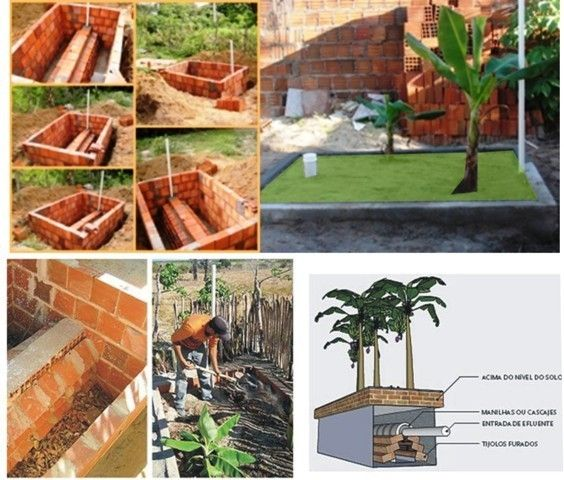

📸 GALERIA DO PROJETO

Construção da Fossa

Uma solução sustentável para o tratamento ecológico das águas cinzas.
Explorar ProjetoA Fossa de Bananeira é uma tecnologia ecológica destinada ao tratamento de águas cinzas provenientes de pias, chuveiros e lavanderias. Seu funcionamento ocorre através da interação entre matéria orgânica, microrganismos decompositores e plantas, especialmente as bananeiras, capazes de absorver grandes quantidades de água e nutrientes.
Benefícios
Etapas
ODS Relacionadas
As águas provenientes de chuveiros, lavatórios e lavanderias são conduzidas por tubulações até a estrutura da Fossa de Bananeira.
Pedras, brita, galhos e folhas secas atuam como filtros naturais, retendo impurezas e criando um ambiente ideal para a ação dos microrganismos.
Bactérias e fungos transformam resíduos orgânicos em nutrientes que podem ser absorvidos pelas plantas.
As raízes absorvem água e nutrientes, contribuindo para o crescimento das plantas e para o reaproveitamento dos recursos naturais.
A água absorvida retorna à atmosfera através das folhas, finalizando o ciclo ecológico do sistema.
O sistema funciona com base em processos biológicos de decomposição e absorção vegetal. Microrganismos convertem resíduos orgânicos em nutrientes e as plantas utilizam esses nutrientes durante seu crescimento.
Por não utilizar energia elétrica nem produtos químicos, a Fossa de Bananeira é considerada uma tecnologia sustentável de baixo impacto ambiental.

Embora seja conhecida como Fossa de Bananeira, outras plantas com grande capacidade de absorção de água também podem ser utilizadas no sistema, desde que sejam adequadas ao clima local.
O sistema não utiliza energia elétrica nem produtos químicos, tornando-se uma alternativa sustentável e de baixo custo para o tratamento de águas cinzas.
As folhas, galhos e matéria orgânica presentes na estrutura servem como abrigo para milhões de microrganismos que ajudam na decomposição dos resíduos.
A Fossa de Bananeira contribui para a conservação da água, redução da poluição do solo e fortalecimento da educação ambiental nas comunidades.
Teste seus conhecimentos sobre sustentabilidade, saneamento ecológico e Fossa de Bananeira.
🎯 INICIAR MISSÃO SUSTENTÁVEL